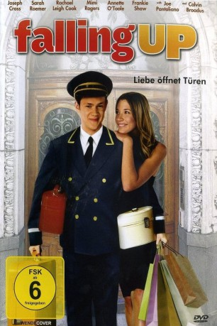

#10563 Falling Up - Liebe öffnet Türen
Alternativ: Falling Up (Englischer Titel)
 
 IMDB-Wertung: 5.7 / 10
IMDB-Wertung: 5.7 / 10  Metascore: 0
Metascore: 0 
Henry O'Shea ist mitten in der Ausbildung zum Krankenpfleger, als seine Familie ein Schicksalsschlag widerfährt. Ganz überraschend stirbt sein Vater. Somit ist er von einem Tag auf den anderen der Mann im Haus und mit dieser Rolle völlig überfordert. Da die Familie nicht besonders reich ist, muss Henry seine Ausbildung abbrechen und einen Job als Portier in New York beginnen, um seiner Mutter finanziell zur Seite zu stehen. Eines Tages trifft er auf die junge und attraktive Hausbewohnerin Scarlett und fühlt sich sofort zu ihr hingezogen. Je öfter sich die beiden sehen, desto mehr finden sie Gefallen am jeweils anderen und schon ehe sich Henry versehen kann, haben die beiden eine romantische Beziehung. Das gefällt Scarletts Mutter Meredith allerdings überhaupt nicht, wünscht sie sich doch für ihre Tochter etwas Besseres, als nur einen Concierge.
Jahr: 2009
Dauer: 98 Minuten
FSK: 6
Land: USA Studio: Anchor Bay EntertainmentTonspuren: DTS - ,
Untertitel: Deutsch,
Auflösung: 1080p (1920x1080) Größe: 8140 MB
Genre: Drama, Komödie, Liebe
Regisseur: David M. Rosenthal
Drehbuch: Peter Kellner, David M. Rosenthal, Joseph M. Smith
Soundtrack: Mark Mothersbaugh
Darsteller:
 Joseph Cross als Henry O'Shea
Joseph Cross als Henry O'Shea- Sarah Roemer als Scarlett Dowling
 Snoop Dogg als Raul
Snoop Dogg als Raul Rachael Leigh Cook als Caitlin O' Shea
Rachael Leigh Cook als Caitlin O' Shea- Claudette Lalí als Mercedes
 Joe Pantoliano als George
Joe Pantoliano als George Mimi Rogers als Meredith
Mimi Rogers als Meredith Annette O'Toole als Grace O' Shea
Annette O'Toole als Grace O' Shea- Daniel Newman als Jake Weaver
- Sam Page als Buck
 Frankie Shaw als Gretchen
Frankie Shaw als Gretchen Gordon Clapp als Colin O'Shea
Gordon Clapp als Colin O'Shea Jim Piddock als Phillip Dowling
Jim Piddock als Phillip Dowling Peter Jason als John O'Shea
Peter Jason als John O'Shea Ajay Naidu als Paco
Ajay Naidu als Paco Michael Panes als Laszlo
Michael Panes als Laszlo Gerry Bednob als Cabbie
Gerry Bednob als Cabbie- John Farrage als Sarkis Papodopoulos
 Andrew Elvis Miller als Jason
Andrew Elvis Miller als Jason- Sam Pancake als Ray
- Ellen Travolta als Dean Swift
- Maria Cina als Mrs. Silverman
- Bryan Okes als Gotham Club Maitre D'
- Reena Shah als Ticket Agent
- Lance Zakin als Man on Boat Looking at Statue of Liberty (uncredited)
- Harry J. Riley als Gotham Club Doorman
- Brian Russo als Mr. Silverman
- Keith Hahto als Bobby Silverman
- Charles Canada als Francisco
- Edward Jeffers als Thug
- J.P. O'Shaughnessy als Charlie Doyle
- Michael Maher als Trench Coat Guy
- Randy Weatherbee als Paramedic
- Rick Ehrenstrasser als Maintainance Man
- Steven Peacock Jacoby als Handball Player
- R.J. Hampton als Store patron (uncredited)
Datei: X:\2009(A-F)\Falling Up - Liebe öffnet Türen (2009, FSK6, 1920x1080).mkv seit 21.01.2019
Festplatte: HD 2008(G-Z)-2009(A-F)
 Es gibt insgesamt 91 Filme in der Gruppe '2009(A-F)'
Es gibt insgesamt 91 Filme in der Gruppe '2009(A-F)'